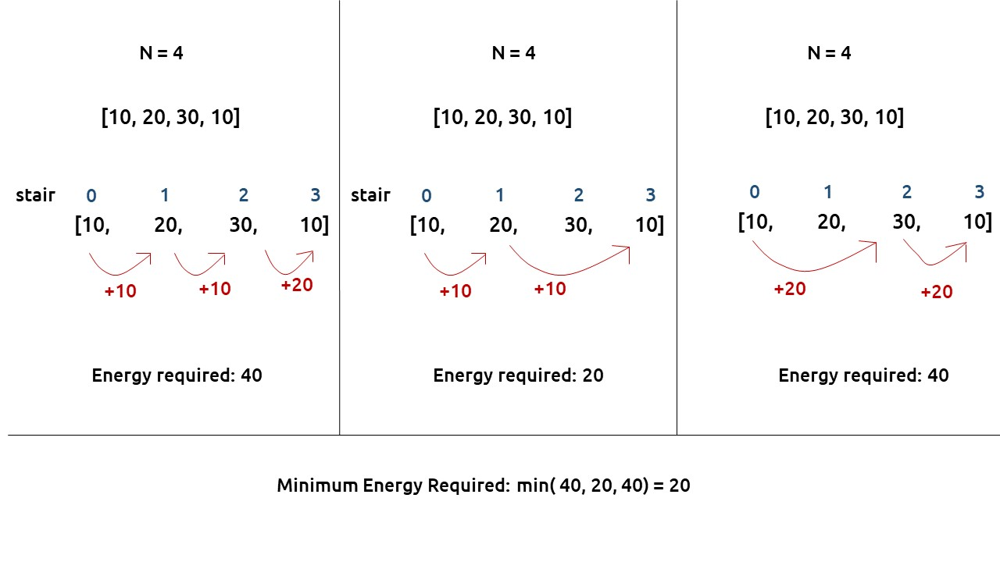
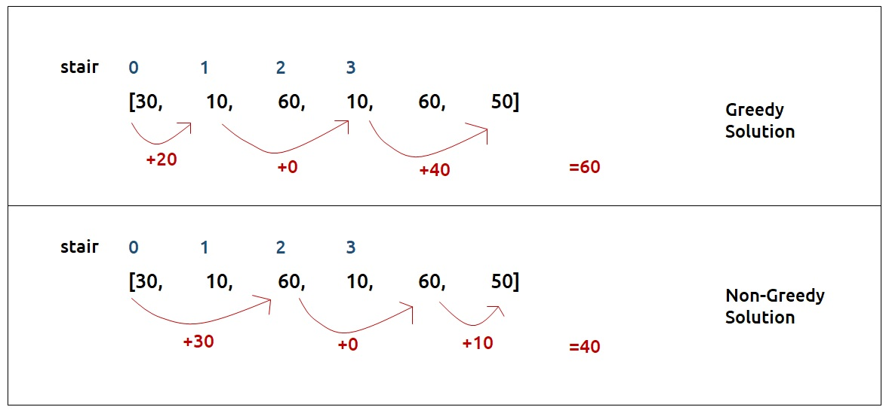
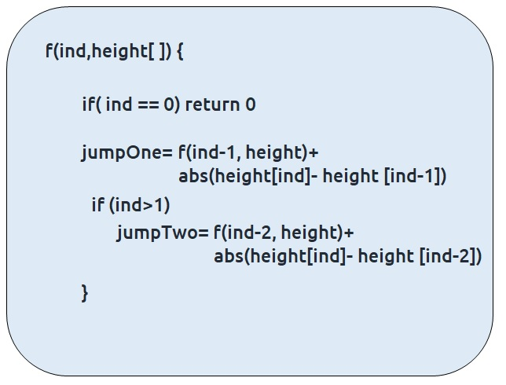
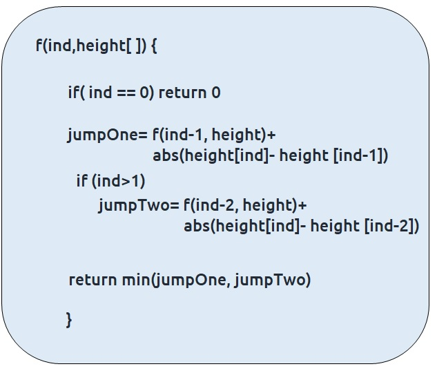
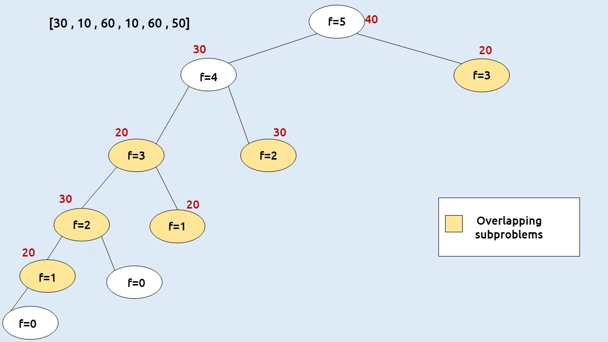

Problem Statement:
Given a number of stairs and a frog, the frog wants to climb from the 0th stair to the (N-1)th stair. At a time the frog can climb either one or two steps. A height[N] array is also given. Whenever the frog jumps from a stair i to stair j, the energy consumed in the jump is abs(height[i]- height[j]), where abs() means the absolute difference. We need to return the minimum energy that can be used by the frog to jump from stair 0 to stair N-1.
Examples
Examples: 

Disclaimer: Don’t jump directly to the solution, try it out yourself first.
Memorization Approach
Algorithm / Intuition
As the problem statement states to find the minimum energy required, two approaches should come to our mind, greedy and dynamic programming.
First, we will see why a greedy approach will not work?
The total energy required by the frog depends upon the path taken by the frog. If the frog just takes the cheapest path in every stage it can happen that it eventually takes a costlier path after a certain number of jumps. The following example will help to understand this.

Therefore a greedy solution will not work and we need to try all possible paths to find the answer.
Steps to form the recursive solution
We will recap the steps discussed in the previous article to form the recursive solution.
Step 1: Express the problem in terms of indexes
- This can be easily done as there are array indexes [0,1,2,..., n-1].
- We can say that f(n-1) signifies the minimum amount of energy required to move from stair 0 to stair n-1.
- Therefore f(0) simply should give us the answer as 0(base case).
Step 2: Try all the choices to reach the goal.
The frog can jump either by one step or by two steps. We will calculate the cost of the jump from the height array. The rest of the cost will be returned by the recursive calls that we make
Our pseudocode till this step will be:

Step 3: Take the minimum of all the choices
As the problem statement asks to find the minimum total energy, we will return the minimum of two choices of step2.
Also at ind=1, we can’t try the second choice so we will only make one recursive call.
The base case will be when we want to go to the 0th stair, then we have only one option.
Our final pseudo-code will be:

Once we form the recursive solution, we can use the approach told in Dynamic Programming Introduction to convert it into a dynamic programming one.
Memoization approach
Steps to convert Recursive code to memoization solution:
- Create a dp[n] array initialized to -1.
- Whenever we want to find the answer of a particular value (say n), we first check whether the answer is already calculated using the dp array(i.e dp[n] != -1 ). If yes, simply return the value from the dp array.
- If not, then we are finding the answer for the given value for the first time, we will use the recursive relation as usual but before returning from the function, we will set dp[n] to the solution we get.
Recursion tree diagram:

Note: To watch a detailed dry run of this approach, please watch the video attached below
Code
#include <bits/stdc++.h>
using namespace std;
int solve(int ind, vector<int>& height, vector<int>& dp){
if(ind==0) return 0;
if(dp[ind]!=-1) return dp[ind];
int jumpTwo = INT_MAX;
int jumpOne= solve(ind-1, height,dp)+ abs(height[ind]-height[ind-1]);
if(ind>1)
jumpTwo = solve(ind-2, height,dp)+ abs(height[ind]-height[ind-2]);
return dp[ind]=min(jumpOne, jumpTwo);
}
int main() {
vector<int> height{30,10,60 , 10 , 60 , 50};
int n=height.size();
vector<int> dp(n,-1);
cout<<solve(n-1,height,dp);
}
import java.util.*;
class TUF{
static int solve(int ind,int[] height,int[] dp){
if(ind==0) return 0;
if(dp[ind]!=-1) return dp[ind];
int jumpTwo = Integer.MAX_VALUE;
int jumpOne= solve(ind-1, height,dp)+ Math.abs(height[ind]-height[ind-1]);
if(ind>1)
jumpTwo = solve(ind-2, height,dp)+ Math.abs(height[ind]-height[ind-2]);
return dp[ind]=Math.min(jumpOne, jumpTwo);
}
public static void main(String args[]) {
int height[]={30,10,60 , 10 , 60 , 50};
int n=height.length;
int dp[]=new int[n];
Arrays.fill(dp,-1);
System.out.println(solve(n-1,height,dp));
}
}
import sys
import math
def solve(ind, height, dp):
if ind == 0:
return 0
if dp[ind] != -1:
return dp[ind]
jumpTwo = sys.maxsize
jumpOne = solve(ind-1, height, dp) + abs(height[ind] - height[ind-1])
if ind > 1:
jumpTwo = solve(ind-2, height, dp) + abs(height[ind] - height[ind-2])
dp[ind] = min(jumpOne, jumpTwo)
return dp[ind]
if __name__ == "__main__":
height = [30, 10, 60, 10, 60, 50]
n = len(height)
dp = [-1] * n
print(solve(n-1, height, dp))
function solve(ind, height, dp) {
if (ind === 0) return 0;
if (dp[ind] !== -1) return dp[ind];
let jumpTwo = Infinity;
let jumpOne = solve(ind - 1, height, dp) + Math.abs(height[ind] - height[ind - 1]);
if (ind > 1)
jumpTwo = solve(ind - 2, height, dp) + Math.abs(height[ind] - height[ind - 2]);
return (dp[ind] = Math.min(jumpOne, jumpTwo));
}
function main() {
const height = [30, 10, 60, 10, 60, 50];
const n = height.length;
const dp = new Array(n).fill(-1);
console.log(solve(n - 1, height, dp));
}
main();
Output: 40
Complexity Analysis
Time Complexity: O(N)
Reason: The overlapping subproblems will return the answer in constant time O(1). Therefore the total number of new subproblems we solve is ‘n’. Hence total time complexity is O(N).
Space Complexity: O(N)
Reason: We are using a recursion stack space(O(N)) and an array (again O(N)). Therefore total space complexity will be O(N) + O(N) ≈ O(N)
Tabulation Approach
Algorithm / Intuition
Tabulation approach
- Declare a dp[] array of size n.
- First, initialize the base condition values, i.e dp[0] as 0.
- Set an iterative loop that traverses the array( from index 1 to n-1) and for every index calculate jumpOne and jumpTwo and set dp[i] = min(jumpOne, jumpTwo).
Code
#include <bits/stdc++.h>
using namespace std;
int main() {
vector<int> height{30,10,60,10,60,50};
int n=height.size();
vector<int> dp(n,-1);
dp[0]=0;
for(int ind=1;ind<n;ind++){
int jumpTwo = INT_MAX;
int jumpOne= dp[ind-1] + abs(height[ind]-height[ind-1]);
if(ind>1)
jumpTwo = dp[ind-2] + abs(height[ind]-height[ind-2]);
dp[ind]=min(jumpOne, jumpTwo);
}
cout<<dp[n-1];
}
import java.util.*;
class TUF{
public static void main(String args[]) {
int height[]={30,10,60,10,60,50};
int n=height.length;
int dp[]=new int[n];
Arrays.fill(dp,-1);
dp[0]=0;
for(int ind=1;ind<n;ind++){
int jumpTwo = Integer.MAX_VALUE;
int jumpOne= dp[ind-1] + Math.abs(height[ind]-height[ind-1]);
if(ind>1)
jumpTwo = dp[ind-2] + Math.abs(height[ind]-height[ind-2]);
dp[ind]=Math.min(jumpOne, jumpTwo);
}
System.out.println(dp[n-1]);
}
}
def main():
height = [30, 10, 60, 10, 60, 50]
n = len(height)
dp = [-1 for _ in range(n)]
dp[0] = 0
for ind in range(1, n):
jumpTwo = float('inf')
jumpOne = dp[ind-1] + abs(height[ind]-height[ind-1])
if ind > 1:
jumpTwo = dp[ind-2] + abs(height[ind]-height[ind-2])
dp[ind] = min(jumpOne, jumpTwo)
print(dp[n-1])
if __name__ == "__main__":
main()
function main() {
const height = [30, 10, 60, 10, 60, 50];
const n = height.length;
const dp = new Array(n).fill(-1);
dp[0] = 0;
for (let ind = 1; ind < n; ind++) {
let jumpTwo = Infinity;
let jumpOne = dp[ind - 1] + Math.abs(height[ind] - height[ind - 1]);
if (ind > 1)
jumpTwo = dp[ind - 2] + Math.abs(height[ind] - height[ind - 2]);
dp[ind] = Math.min(jumpOne, jumpTwo);
}
console.log(dp[n - 1]);
}
main();
Output: 40
Complexity Analysis
Time Complexity: O(N)
Reason: We are running a simple iterative loop
Space Complexity: O(N)
Reason: We are using an external array of size ‘n+1’.
Space Optimization Approach
Algorithm / Intuition
If we closely look at the values required at every iteration,
dp[i], dp[i-1], and dp[i-2]
we see that for any i, we do need only the last two values in the array. So is there a need to maintain a whole array for it?
The answer is ‘No’. Let us call dp[i-1] as prev and dp[i-2] as prev2. Now understand the following illustration.
- Each iteration’s cur_i and prev becomes the next iteration’s prev and prev2 respectively.
- Therefore after calculating cur_i, if we update prev and prev2 according to the next step, we will always get the answer.
- After the iterative loop has ended we can simply return prev as our answer.
Code
#include <bits/stdc++.h>
using namespace std;
int main() {
vector<int> height{30,10,60,10,60,50};
int n=height.size();
int prev=0;
int prev2=0;
for(int i=1;i<n;i++){
int jumpTwo = INT_MAX;
int jumpOne= prev + abs(height[i]-height[i-1]);
if(i>1)
jumpTwo = prev2 + abs(height[i]-height[i-2]);
int cur_i=min(jumpOne, jumpTwo);
prev2=prev;
prev=cur_i;
}
cout<<prev;
}
import java.util.*;
class TUF{
public static void main(String args[]) {
int height[]={30,10,60,10,60,50};
int n=height.length;
int prev=0;
int prev2=0;
for(int i=1;i<n;i++){
int jumpTwo = Integer.MAX_VALUE;
int jumpOne= prev + Math.abs(height[i]-height[i-1]);
if(i>1)
jumpTwo = prev2 + Math.abs(height[i]-height[i-2]);
int cur_i=Math.min(jumpOne, jumpTwo);
prev2=prev;
prev=cur_i;
}
System.out.println(prev);
}
}
import sys
def main():
height = [30, 10, 60, 10, 60, 50]
n = len(height)
prev = 0
prev2 = 0
for i in range(1, n):
jumpTwo = sys.maxsize
jumpOne = prev + abs(height[i] - height[i - 1])
if i > 1:
jumpTwo = prev2 + abs(height[i] - height[i - 2])
cur_i = min(jumpOne, jumpTwo)
prev2 = prev
prev = cur_i
print(prev)
if __name__ == "__main__":
main()
function main() {
const height = [30, 10, 60, 10, 60, 50];
const n = height.length;
let prev = 0;
let prev2 = 0;
for (let i = 1; i < n; i++) {
let jumpTwo = Infinity;
let jumpOne = prev + Math.abs(height[i] - height[i - 1]);
if (i > 1)
jumpTwo = prev2 + Math.abs(height[i] - height[i - 2]);
let cur_i = Math.min(jumpOne, jumpTwo);
prev2 = prev;
prev = cur_i;
}
console.log(prev);
}
main();
Output: 40
Complexity Analysis
Time Complexity: O(N)
Reason: We are running a simple iterative loop
Space Complexity: O(1)
Reason: We are not using any extra space.
Video Explanation
Special thanks to Anshuman Sharma and Abhipsita Das for contributing to this article on takeUforward. If you also wish to share your knowledge with the takeUforward fam, please check out this article